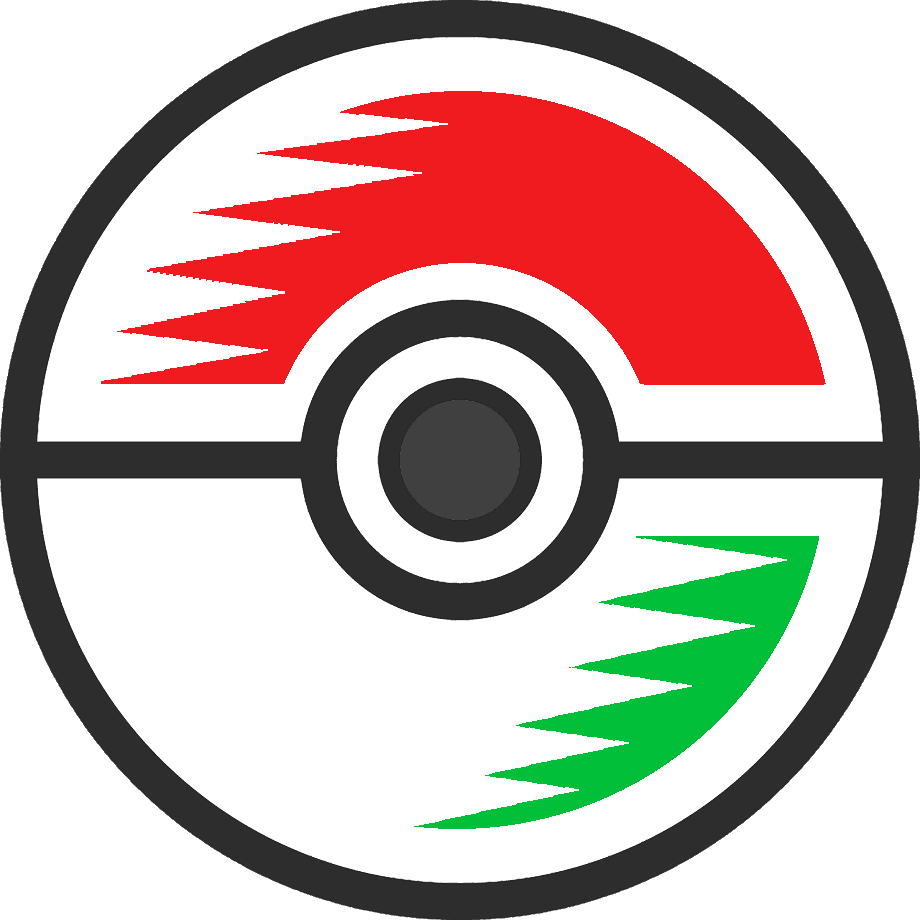

Pokedex Tricolor
Bienvenido a la Pokedex Tricolor. Aquí encontrarás información detallada sobre todos los Pokémon de la región de Nejico. busca tu favorito seleccionando uno de los tipos para filtrar los resultados.

Pokemon TricolorBienvenido a la Pokedex Tricolor. Aquí encontrarás información detallada sobre todos los Pokémon de la región de Nejico. busca tu favorito seleccionando uno de los tipos para filtrar los resultados.